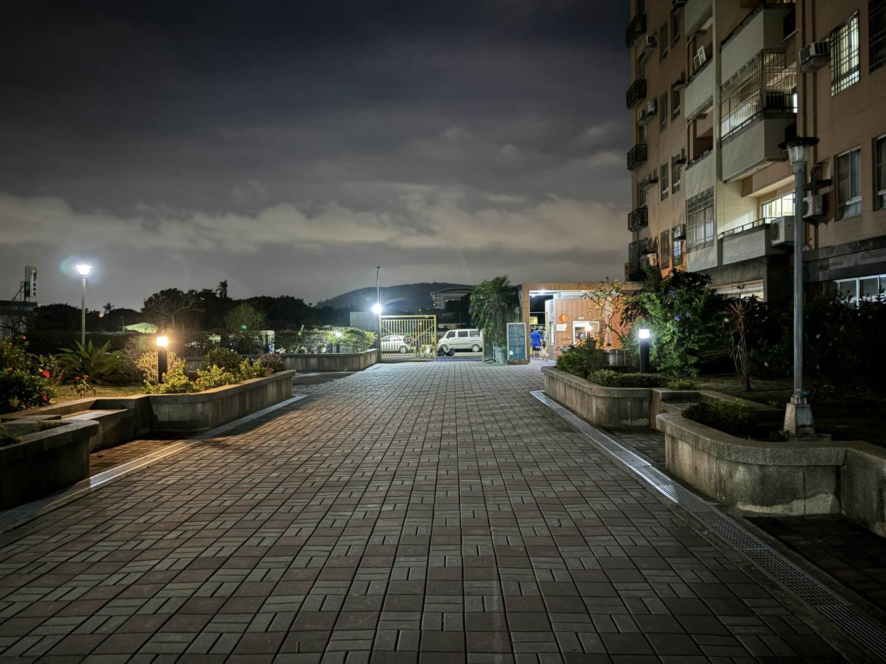
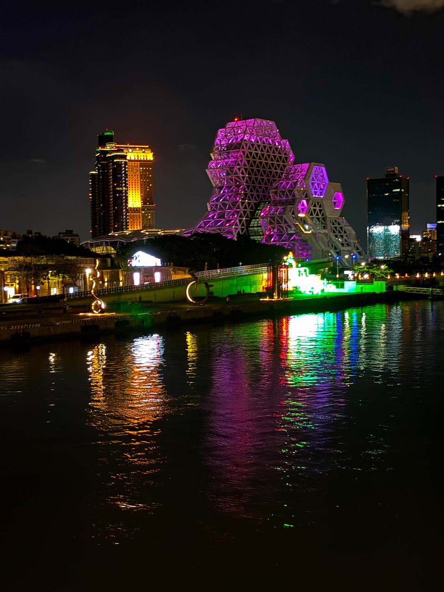
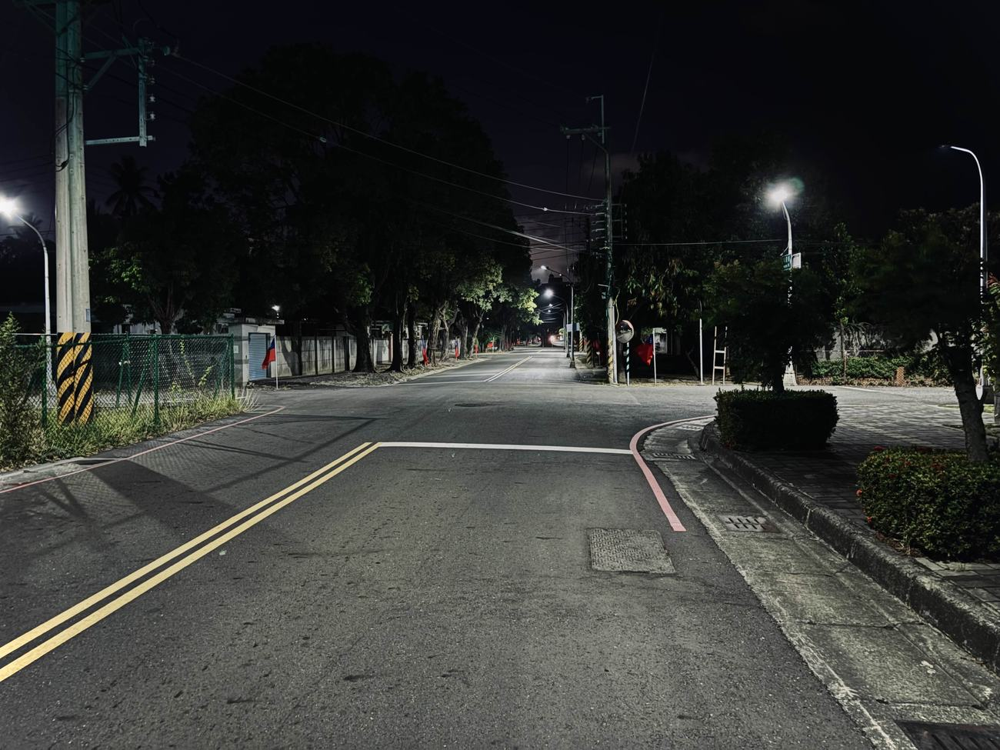
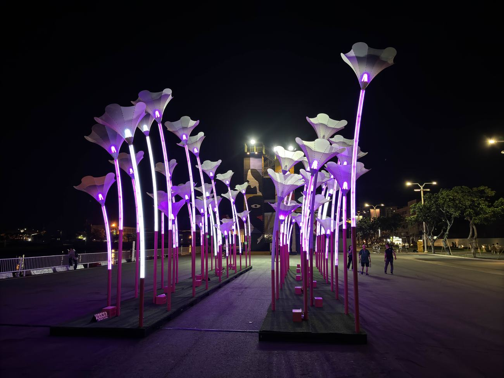
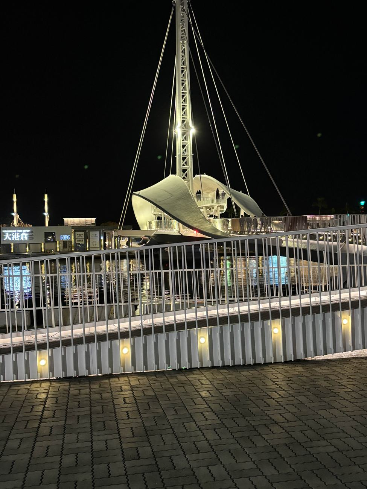

慢熟，但不是難相處
個性算理性偏感性，不太擅長那種為了不冷場硬擠出來的寒暄。剛認識可能比較安靜，熟了之後幹話量會明顯上升，而且通常沒有關閉按鈕。
現役軍人 ・ 海軍陸戰隊
夜裡還亮著的那盞，剛好是我。
柴柴的自介。關於我、遊戲、照片和聯絡方式。
生理男，座標台灣南部，目前當兵中，所以有時候上線時間很隨機。 生日是 2006 / 03 / 15，現在 — 歲，這個數字會自己長大，不需要每年人工搶救。
個性算理性偏感性，不太擅長那種為了不冷場硬擠出來的寒暄。剛認識可能比較安靜，熟了之後幹話量會明顯上升，而且通常沒有關閉按鈕。
有事情直接講反而舒服。拐很多彎、官腔、假客套那類東西，會讓我腦袋自動離線。
玩遊戲偏射擊、冒險、合作類，也會碰音樂遊戲。 對電腦、科技、設定、介面之類的東西很容易手癢，看到預設值常常就很想改—— 不是因為預設值一定不好，只是它存在那裡，看起來很欠動。
作息則是標準夜柴子。長時間熬夜代表，上午有機率還在睡，晚上反而比較像正式開機。
最高翼數
11翼
喜歡跑圖、帶萌新、亂彈琴。不太會主動社交，但會默默陪人。 比起技術或效率，更在乎一起玩的人。上線時間隨緣，有看到我基本算抽到了。 簡單講，就是一隻會飛的柴柴而已。
可左右滑動
手機隨手拍的，幾乎都是晚上。路上沒人的時候，燈才是主角。





我不是已讀不回，我是真的在睡。